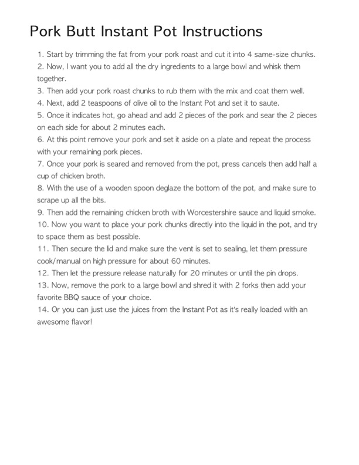

Pork Butt Instant Pot Instructions

Original cookbook page 262
Ingredients
- Pork roast (pork butt)
- 2 teaspoons olive oil
- Dry rub ingredients (salt, pepper, spices)
- Chicken broth
- Worcestershire sauce
- Liquid smoke
- BBQ sauce of your choice
Instructions
- Start by trimming the fat from your pork roast and cut it into 4 same-size chunks.
- Now, want you to add all the dry ingredients to a large bowl and whisk them together.
- Then add your pork roast chunks to rub them with the mix and coat them well.
- Next, add 2 teaspoons of olive oil to the Instant Pot and set it to saute.
- Once it indicates hot, go ahead and add 2 pieces of the pork and sear the 2 pieces on each side for about 2 minutes each.
- At this point remove your pork and set it aside on a plate and repeat the process with your remaining pork pieces.
- Once your pork is seared and removed from the pot, press cancels then add half a cup of chicken broth.
- With the use of a wooden spoon deglaze the bottom of the pot, and make sure to scrape up all the bits.
- Then add the remaining chicken broth with Worcestershire sauce and liquid smoke.
- Now you want to place your pork chunks directly into the liquid in the pot, and try to space them as best possible.
- Then secure the lid and make sure the vent is set to sealing, let them pressure cook/manual on high pressure for about 60 minutes.
- Then let the pressure release naturally for 20 minutes or until the drops.
- Now, remove the pork to a large bowl and shred it with 2 forks then add your favorite BBQ sauce of your choice.
- Or you can just use the juices from the Instant Pot as it's really loaded with an
Recipe #262 from collection